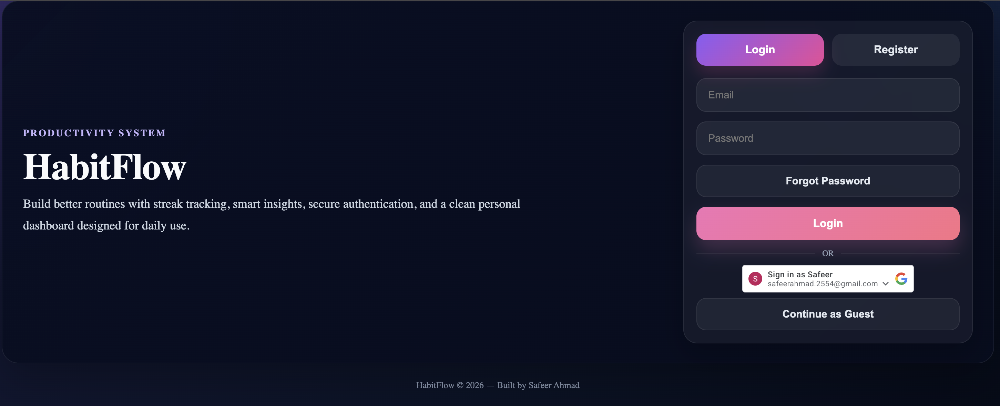
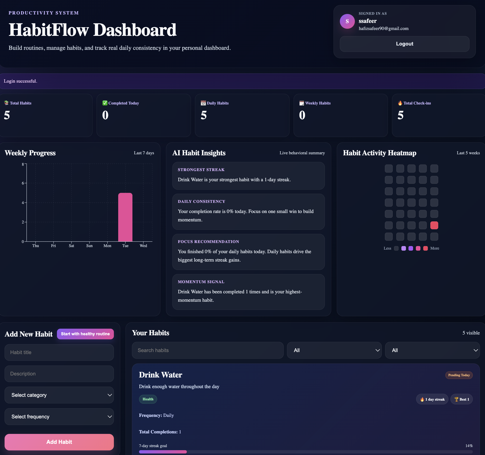
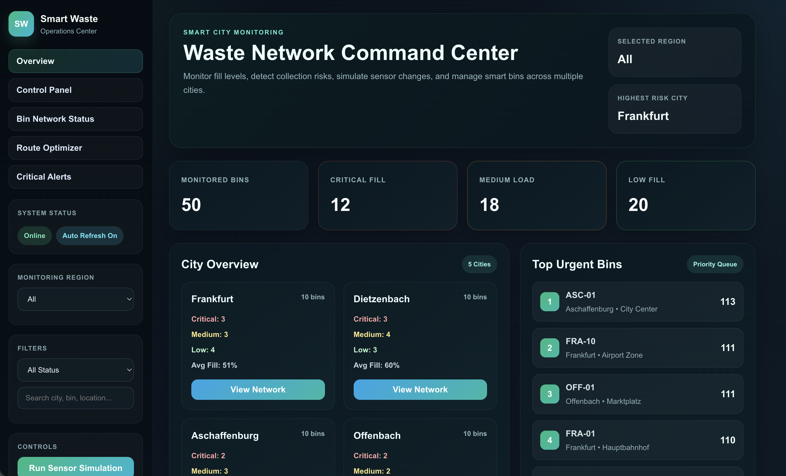
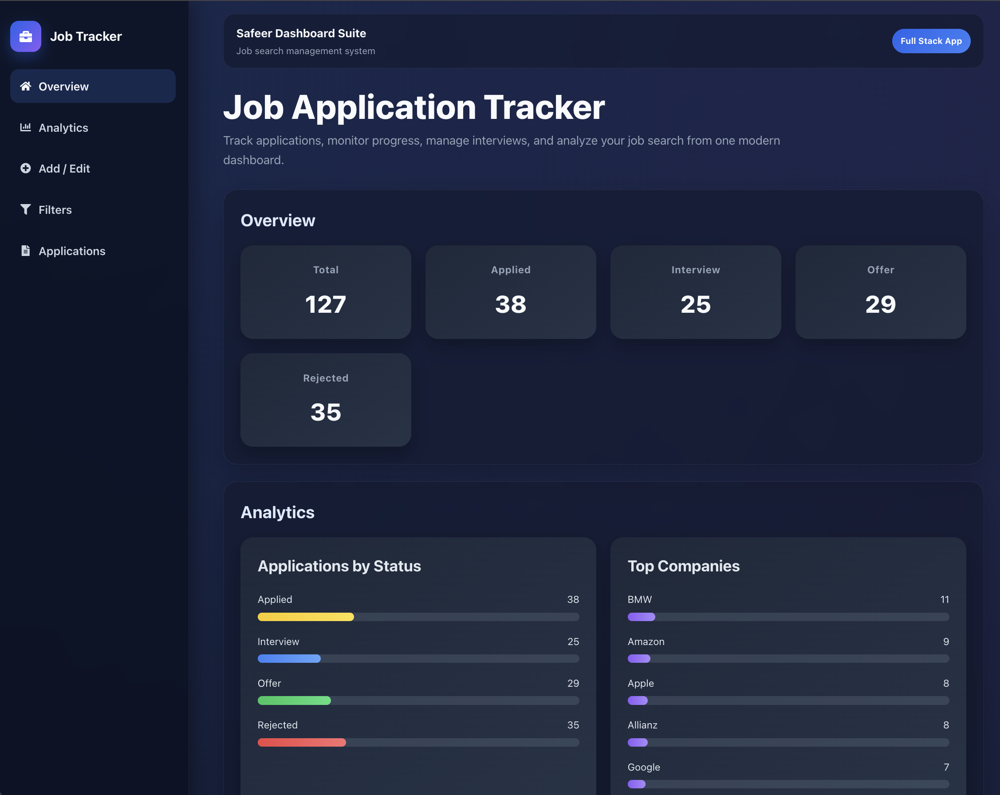
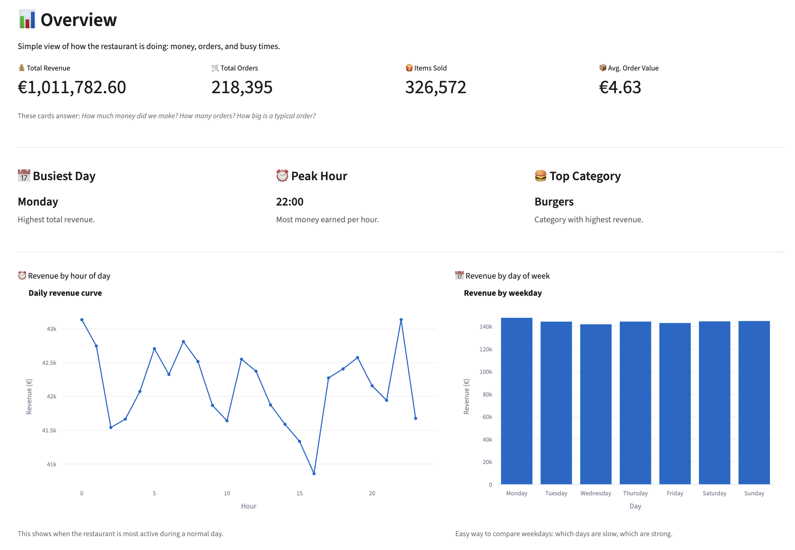
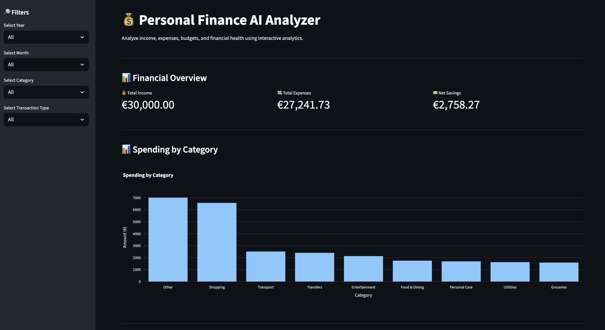

Software Design International student at TH Aschaffenburg focused on Python development, data analysis, and building practical software projects.
I am a Software Design International student at Technische Hochschule Aschaffenburg with a strong interest in software development, data analysis, and building practical technology solutions.
I enjoy working with Python, data visualization, and web technologies to analyze data and create useful applications. My projects focus on turning data into insights and building dashboards that help understand real-world business problems.
Currently, I am developing my portfolio through hands-on projects involving data analysis, interactive dashboards, and web development.
HabitFlow is a full-stack productivity application that helps users build better routines through habit tracking, streak monitoring, and activity analytics.
The platform includes secure authentication (JWT, Google OAuth, OTP verification), habit management, streak tracking, analytics charts, and a heatmap dashboard to visualize consistency over time.


Technologies: React, FastAPI, SQLAlchemy, JWT Authentication, Google OAuth, Recharts, Vercel, Render
A full-stack smart city operations dashboard built with React and FastAPI. The system monitors 50 waste bins across multiple cities, tracks fill levels, highlights critical bins, and helps optimize collection routes.
The platform includes live API integration, sensor simulation, city-level monitoring, and route prioritization through a modern operations dashboard.

Technologies: React, FastAPI, Python, Axios, Vercel, Render
A full-stack dashboard for managing and analyzing job applications. Built with FastAPI and React, the application allows users to track applications, update statuses, filter companies, and view analytics about job search progress.
The dashboard includes CRUD operations, real-time analytics, application status tracking, and a responsive UI.

Technologies: React, FastAPI, SQLAlchemy, SQLite, Axios, Vite
Interactive data analysis dashboard exploring restaurant sales performance, customer behavior, and revenue trends using transaction data.
Key insights include busiest hours, top-selling menu items, employee performance, and the impact of weather and promotions on sales.

Technologies: Python, Pandas, Streamlit, Plotly, Scikit-learn
Interactive financial analytics dashboard that analyzes income, expenses, budgets, recurring subscriptions, and overall financial health.
The dashboard provides insights such as spending distribution, monthly income vs expenses, budget tracking, recurring expense detection, and a financial health score.

Technologies: Python, Pandas, Streamlit, Plotly
Interested in collaborating or discussing opportunities? Feel free to reach out.
Email: ssafeerahmadd@gmail.com
GitHub: github.com/safeerahmad12